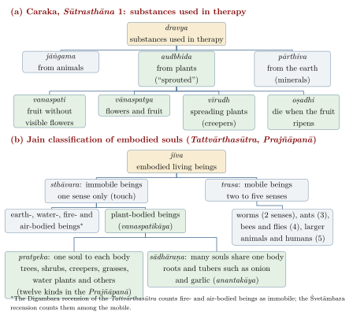

Chapter 6: Ordering the Plant World: Classification in Indian Traditions¶
Every community that lives with plants sorts them: into trees and grasses, food and poison, plants of the wet field and plants of the dry scrub. What differs from one tradition to another is the purpose of the sorting and the criteria used. The Indian sources discussed in this chapter classify plants for several distinct purposes. Vedic poets praise plants and name them in ritual; the Dharmaśāstra places them in a hierarchy of living beings shaped by karma; the physicians order them by growth habit, by the parts that are used, and above all by their taste and action on the body; the lexicographers of the nighaṇṭu tradition collect their names; Jain and Buddhist monastic thinkers ask whether plants are alive and how far they may be harmed; and farmers, herders and forest communities sort them in the languages of everyday work. None of these systems was an attempt at a universal natural taxonomy of the kind that European botany developed from the seventeenth century, and it is unhelpful either to judge them by that standard or to claim that they “anticipated” it.
The chapter follows these strands roughly in chronological order, then turns to the encounter between Indian plant knowledge and European botany, from Hortus Malabaricus to the colonial economic dictionaries, and ends with a historically framed comparison with Linnaean taxonomy. The Vṛkṣāyurveda texts, with their own short classifications, are treated in Chapter 4; medicinal plants as plants are the subject of Chapter 12; and the therapeutic doctrine of dravyaguṇa belongs to Volume 13, Āyurveda.
6.1 The Vedic Vocabulary of Plants¶
The Ṛgveda (core c. 1500–1200 BCE) does not offer a classification in any formal sense, but it already has a stable set of words for kinds of vegetation. Oṣadhi (later also auṣadhi) denotes herbs and plants in general, especially those valued for healing, and in time gives the ordinary word for medicine, auṣadha. Vanaspati, “lord of the forest”, is a large tree; in ritual contexts the word can also denote the wooden sacrificial post and the tree-deity. Vṛkṣa is the ordinary word for tree. Vīrudh denotes plants that spread or grow up, usually understood as creepers, shrubs and smaller growth; it is especially frequent in the Atharvaveda, where oṣadhayo vīrudhaḥ often appear together as a phrase for the whole world of healing plants (Whitney 1905).
The longest Vedic poem addressed to plants is the Oṣadhisūkta, Ṛgveda 10.97, a hymn spoken by a healer in praise of the plants he uses. It opens:
Ṛgveda 10.97.1
yā oṣadhīḥ pūrvā jātā devebhyas triyugam purā
manai nu babhrūṇām ahaṃ śataṃ dhāmāni sapta ca
“The plants that were born of old, three ages before the gods — I shall now call to mind the hundred and seven domains of the brown ones.”
The “hundred and seven” is a poetic count, not a census, and the “domains” (dhāman) are the plants’ seats or forms; translators differ on how to render the word (Jamison and Brereton 2014). Later in the hymn the plants are addressed as those that bear fruit and those that are fruitless, those without flowers and those that flower. This is the earliest Indian text to contrast plants by the presence or absence of visible flowers and fruit, a contrast that reappears in every later scheme. It is a poet’s inclusive list, however, not a set of defined classes.
The Atharvaveda names many more individual plants than the Ṛgveda, and several hymns are addressed to particular plants used against disease or in rites of protection and love, among them kuṣṭha, a Himalayan root that later became an important article of trade (Chapter 12) (Whitney 1905). The identification of most Atharvavedic plant names with modern species is uncertain, and the same caution applies to the most famous Vedic plant, soma, whose botanical identity remains unresolved after two centuries of debate.
Two further ideas from the late Vedic period frame later thinking. First, the Upaniṣads classify living beings by their mode of birth. The Chāndogya Upaniṣad (6.3.1) names three origins of beings — from an egg, from a living individual, and from a sprout (udbhijja) — and the Aitareya Upaniṣad adds a fourth, the sweat-born (svedaja) (Olivelle 1998). Plants are thus the “sprout-born” (udbhijja), a term that the Dharmaśāstra and the medical texts take up. Second, the Chāndogya Upaniṣad (6.11) uses a tree as an image of the living self: struck at the root, the stem or the top, a great tree bleeds sap but lives on, because it is pervaded by the living self (jīva); when life leaves one branch, that branch withers, and when it leaves the whole tree, the tree withers (Olivelle 1998). The passage is a teaching about the self, not a botanical observation, but it shows that a tree could be taken as a paradigm of a living being.
6.2 Manu: Plants among the Immobile Beings¶
The Mānava Dharmaśāstra (Manusmṛti, c. 2nd c. CE) gives the earliest compact classification of plants in Sanskrit. In its account of creation (1.43–49) it lists beings by mode of birth — born from a caul (jarāyuja), from an egg, from sweat, and from a sprout — and then describes the sprout-born. All of them are immobile (sthāvara) and grow from seed or from a cutting (bījakāṇḍaprarohin). Within them Manu distinguishes the classes set out in Table 6.1 (Olivelle 2005).
| Term | Description in the text |
|---|---|
| oṣadhi | Plants that die when their fruit ripens, bearing many flowers and fruits (annual herbs, including the cereals) |
| vanaspati | Plants that bear fruit without flowers |
| vṛkṣa | Plants that bear both flowers and fruit |
| guccha, gulma | Clumps and bushes of various kinds |
| tṛṇa | The various kinds of grass |
| pratāna, vallī | Spreading plants and climbers |
The criteria are visible life-history traits: whether the plant dies after fruiting, whether it has visible flowers, and whether it is a tree, a clump, a grass or a climber. The “fruit without flowers” class fits trees such as the banyan, the pipal and the cluster fig, whose minute flowers are hidden inside the fig and are not seen by the casual observer; modern readers commonly make this identification, although the text names no examples.
Manu then adds that plants, enveloped in darkness as a result of past actions, nonetheless have inner awareness and feel pleasure and pain (1.49; the verse is quoted in Section 4.2), and elsewhere teaches that wrongdoing can lead to rebirth as an immobile being (Olivelle 2005). This is a doctrine about karma and consciousness, not plant physiology, but it helps to explain why later Brahmanical, Jain and Buddhist writers felt obliged to state a position on whether plants feel.
The same question is argued at length in the Mahābhārata, in a dialogue between the sages Bhṛgu and Bharadvāja in the Śāntiparvan (12.177 in the critical edition). Bhṛgu argues that trees have all five senses: they wither in heat and so must feel touch; their fruits and flowers fall at the sound of wind and thunder, so they must hear; a creeper finds its way round a tree, so it must see; they flourish with good and bad odours, so they must smell; and they drink water through their roots, so they must taste. The argument is a philosophical one, built from everyday observations, and is best read as such. When the question of plant feeling returned in the early twentieth century with J. C. Bose’s experiments on plant responses, it was as modern plant physiology, which can settle nothing about these older arguments (Section 4.2.3).
6.3 The Medical Schemes of Caraka and Suśruta¶
The physicians had the most practical reason to classify plants, since they had to find, collect and prepare them. At the start of the Caraka-saṃhitā (Caraka’s redaction c. 100 BCE–200 CE, completed by Dṛḍhabala in the 4th–5th c. CE) all substances used in therapy are divided by origin into three kinds: those from animals (jāṅgama), from the earth, that is, minerals (pārthiva), and from plants (audbhida, “sprouted”) (Sharma 1981). The plant substances are then divided into four classes, and the Suśruta-saṃhitā (layered, early centuries BCE to c. 3rd–5th c. CE) gives a closely parallel fourfold division of immobile beings in its own first chapter (Bhishagratna 1907). Table 6.2 sets them side by side.
| Caraka | Suśruta | ||
| Term | Defined as | Term | Defined as |
| vanaspati | bearing fruit (without flowers) | vanaspati | without flowers, bearing fruit |
| vānaspatya | bearing flowers and fruit | vṛkṣa | bearing flowers and fruit |
| oṣadhi | ending with the ripening of the fruit | oṣadhi | ending with the ripening of the fruit |
| vīrudh | spreading (creepers) | vīrudh | spreading or bushy (pratānavatī, stambinī) |
The two schemes are versions of the same idea and agree closely with Manu. They differ mainly in vocabulary (Caraka’s vānaspatya where Suśruta has vṛkṣa) and in Suśruta’s subdivision of vīrudh into spreading plants and plants that form clumps or bushes; neither author argues with the other on the point. Figure 6.1(a) shows how Caraka’s four classes sit within his division of all therapeutic substances. Later works keep the four classes with small variations; Surapāla’s Vṛkṣāyurveda, for example, opens with its own fourfold division adapted to the gardener’s needs (Chapter 4).

What matters more in practice is that both physicians immediately move from these life-form classes to lists of usable parts and to groupings by action. Caraka lists the products that are taken from plants: roots, bark, heartwood, exudates (niryāsa), stalks, expressed juice, young shoots, alkaline preparations (kṣāra), latex (kṣīra), fruits, flowers, ash, oils, thorns, leaves, buds, tubers and sprouts (Sharma 1981). He also gives short lists of plants used for their roots and of plants used for their fruits. The plant’s growth habit is thus a first orientation; the working categories of the physician are the part used and its effect.
Life form, part and action
Indian medical texts use three different kinds of category for plants, which should not be confused: (1) life-form classes (vanaspati, vṛkṣa/vānaspatya, vīrudh, oṣadhi, and in other texts gulma, latā, tṛṇa); (2) the part used (root, bark, leaf, flower, fruit, seed, heartwood, exudate and so on); and (3) groups by action or property (Caraka’s fifty groups of ten, Suśruta’s named gaṇas, classes by taste). Only the first resembles a botanical classification; the third is the one physicians used most.
6.3.1 Groups by action¶
The fourth chapter of Caraka’s Sūtrasthāna arranges five hundred drugs, most of them plants, into fifty groups of ten (mahākaṣāya), each defined by an action such as “life-promoting” (jīvanīya), “nourishing” (bṛṃhaṇīya) or “scraping” (lekhanīya) (Sharma 1981). Suśruta, in the Sūtrasthāna chapter on the collection of drugs, gives a different set of groups (gaṇa), each named after its first member, such as the vidārigandhādi group (“the group beginning with vidārigandhā”) or the āragvadhādi group (“beginning with āragvadha”, the Indian laburnum, Cassia fistula) (Bhishagratna 1907). The “-ādi” convention, naming a group after its first member, was inherited by the nighaṇṭus and is still used. These groupings bring together plants that have nothing in common botanically and separate close relatives; that is their purpose. They are discussed further in Chapter 12 and, as therapeutics, in Volume 13, Āyurveda.
6.4 Classification by Taste and Potency¶
The most distinctive principle of Āyurvedic dravyaguṇa (“substances and their qualities”) is that every substance, plant or otherwise, can be characterised by a small set of properties: its taste (rasa), of which there are six — sweet (madhura), sour (amla), salty (lavaṇa), pungent (kaṭu), bitter (tikta) and astringent (kaṣāya); its qualities (guṇa), such as heavy or light, oily or dry; its potency (vīrya), usually reduced to two, heating (uṣṇa) or cooling (śīta); its post-digestive taste (vipāka); and, for effects that cannot be predicted from these, its specific power (prabhāva) (Sharma 1981; Wujastyk 2003). The nighaṇṭus record these properties for each plant alongside its synonyms.
For the history of plant classification the significance of this system is that it gives a way of sorting plants that cuts entirely across their form: neem leaf, the bark of a forest tree and a rhizome can all be “bitter and cooling”. The six tastes were a central organising principle of the physician’s knowledge, and taste was an important means of recognising and testing plant material in the market. Attempts to match the six tastes with particular classes of modern phytochemicals are a modern overlay on the texts. The doctrine itself, and the relations between taste, potency and the doṣas, are treated in Volume 13, Āyurveda.
6.5 Land, Season and Collection¶
Indian medical texts consistently relate plants, animals and people to the kind of land they come from. Three kinds of land (deśa) are distinguished: jāṅgala, dry, open country with sparse trees and thorny vegetation; ānūpa, marshy, well-watered country; and sādhāraṇa, land of a middling or mixed kind. Francis Zimmermann’s study The Jungle and the Aroma of Meats shows how this triad, which applies to landscapes, game animals, water and people as much as to plants, organises a whole medical ecology (Section 1.6; (Zimmermann 1987)). The triad is thus not a plant classification in its own right but a framework in which the qualities of plants are partly explained by the qualities of the land in which they grow.
The texts draw practical conclusions. Drugs should be collected from land of the proper kind, free of ant-hills, cremation grounds, saline patches and other defects; plants should be mature, undamaged by insects, fire or frost; and particular parts should be gathered at particular seasons (Sharma 1981; Bhishagratna 1907). These rules are the closest the medical tradition comes to a field manual for collectors. The triad is not a map of modern climatic zones, and the collectors’ rules are best read in the physicians’ own terms rather than as chemistry.
6.6 The Nighaṇṭu Tradition: Names, Synonyms and Identities¶
The largest body of Sanskrit writing about individual plants is lexical. Sanskrit lexicons (kośa) and the medical glossaries called nighaṇṭu list each plant under a head name followed by its synonyms, and the medical ones usually add its properties and actions. The general lexicon Amarakośa (mid-first millennium CE; date uncertain) already has a section on forests and herbs (vanauṣadhivarga) that gives synonym sets for hundreds of trees and herbs. The medical nighaṇṭus include the Dhanvantari-nighaṇṭu (usually placed in the late first or early second millennium CE), the Madanapāla-nighaṇṭu (fourteenth century), the Rāja-nighaṇṭu of Narahari (late medieval; its date is disputed), and the drug section of Bhāvamiśra’s Bhāvaprakāśa (sixteenth century), which remains the most widely used in teaching today. The dates of almost all these works are debated; Meulenbeld (1999) surveys the evidence.
Most nighaṇṭus organise their entries into chapters (varga) named, like Suśruta’s gaṇas, after the first plant: the Bhāvaprakāśa, for instance, has a harītakyādi and a guḍūcyādi varga, as well as chapters on flowers, fruits, grains and vegetables. The principles of grouping are mixed: some chapters are defined by use (grains, vegetables, aromatics), some by part (flowers, fruits), and some only loosely by property. The Bhāvaprakāśa also takes in new plants: it is among the first Sanskrit medical works to describe the disease it calls phiraṅga (“the Frankish disease”, syphilis) and to admit imported drugs such as copacīnī, the China root (a Smilax), reflecting the trade of the Portuguese period.
6.6.1 How Sanskrit plant names work¶
Sanskrit synonyms are usually descriptive. A name may describe the plant’s form (maṇḍūkaparṇī, “frog-leaf”; pṛśniparṇī, “spotted leaf”; śatamūlī, “hundred-rooted”), its smell (aśvagandhā, “smelling of horse”), its habitat (jalaja, “water-born”), a property (tiktā, “bitter”; amṛtā, “immortal” or “deathless”), a use, or a mythological association. A single plant may therefore carry a dozen or more names, and one name may be applied to several plants that share the feature described. Poetic synonyms add another layer: turmeric (haridrā) is also called niśā and rajanī, both meaning “night”; and the similar-sounding dāruharidrā, “tree-turmeric”, is an entirely different plant (Berberis aristata).
This system was well suited to a tradition in which names were learnt with the plants themselves, from teachers and collectors, and in which a synonym also served as a short description. It becomes a problem when texts travel across regions and centuries. Āyurvedic pharmacognosy has a recognised category of “controversial drugs” (sandigdha dravya), plants whose classical name is applied to different species in different regions. Well-known examples are brāhmī (Bacopa monnieri in the Ayurvedic Pharmacopoeia of India, in Kerala practice and in much of the country, but Centella asiatica, the classical maṇḍūkaparṇī, in Bengal and parts of north India; Section 12.3.8); śaṅkhapuṣpī (variously Convolvulus pluricaulis, Evolvulus alsinoides and Clitoria ternatea); rāsnā (Pluchea lanceolata in the north, other species elsewhere, including Alpinia and the orchid Vanda); and pāṣāṇabheda (“stone-breaker”), a name given to several unrelated plants. Some of these differences are old regional traditions in their own right; others are substitutions that arose when the original plant became scarce or unknown. The practical consequences for identity, trade and adulteration are discussed in Chapter 12.
6.7 Plants and Life: Jain, Buddhist and Tamil Views¶
6.7.1 Jain classification of one-sensed beings¶
Jain thought gives plants a precise place in a classification of all living beings (jīva) by the number of their senses. Umāsvāti’s Tattvārthasūtra, the standard summary of Jain doctrine accepted by both major Jain traditions, divides embodied souls into immobile (sthāvara) and mobile (trasa) beings. The immobile beings are the earth-bodied, water-bodied and plant-bodied (vanaspati) souls, to which the Digambara recension of the text adds fire-bodied and air-bodied beings, while the Śvetāmbara recension counts fire and air among the mobile beings. All of them possess only one sense, touch. Mobile beings range from two-sensed creatures such as worms (touch and taste) through three-sensed creatures such as ants and four-sensed creatures such as bees and flies, to five-sensed beings, which include most larger animals and humans (Tatia 1994).
Within plant life Jain texts distinguish plants in which each body is the dwelling of a single soul (pratyeka) from those in which a single body is shared by innumerable souls (sādhāraṇa). Roots and tubers such as onion, garlic, potato and carrot are counted among the second kind (anantakāya, “having infinite bodies”), and the avoidance of these foods by observant Jains follows from this classification (Tatia 1994). The classification also had consequences for agriculture, since ploughing and clearing destroy earth-bodied and plant-bodied beings (Section 2.10). The Jain scheme is a moral and soteriological ordering of life, but it is also one of the earliest systematic classifications of all living things by a single, explicitly stated criterion (Figure 6.1b).
The Tattvārthasūtra is a summary. The fuller treatment of plant-bodied beings is in the Śvetāmbara canon, above all in the Prajñāpanā (Prakrit Paṇṇavaṇā), one of the subsidiary canonical texts (upāṅga), traditionally ascribed to Śyāmārya (Dundas 2002). Its first section, on the kinds of living beings, divides the plant-bodied into those with a separate body for each soul (patteya, Sanskrit pratyeka) and those in which a body is common to many souls (sāhāraṇa, sādhāraṇa), and then lists the kinds of plants with an individual body under twelve heads, usually given as trees (rukkha), clusters (guccha), shrubs (gumma), creepers (layā), climbers (vallī), jointed plants such as sugarcane and bamboo (pavvaga), grasses (taṇa), valaya (a class whose sense commentators explain in different ways), green herbs (hariya), annual crop plants that die after fruiting (osahi), water plants (jalaruha) and fungi (kuhaṇa). Each class is illustrated with long lists of named plants, and trees are further divided into those with a single seed in the fruit, such as the mango, and those with many seeds, such as the pomegranate. Several of these heads coincide with the life-form classes of Manu and the physicians; others, such as the jointed plants, the water plants and the fungi, reflect the monk’s concern to recognise every form in which life might be harmed. A similar list appears in the Uttarādhyayana (chapter 36). The canonical lists deserve the attention of historians of botany, and they have not yet been studied as fully as the Sanskrit medical schemes.
6.7.2 Buddhist monastic rules¶
Early Buddhism did not regard plants as sentient beings within the round of rebirth. Its monastic rules nevertheless protect them. The Pāli Vinaya prescribes a penance for a monk who destroys vegetation (bhūtagāma); according to the story attached to the rule, it was introduced after lay people complained that monks who cut trees were harming “one-faculty life”, reflecting a widespread belief that trees are alive. The explanation attached to the rule lists five kinds of propagule (bījagāma) — plants propagated from roots, from stems, from joints, from cuttings, and from seeds — a classification by mode of propagation that would have been familiar to any gardener. Schmithausen (1991) has argued that early Buddhist texts reflect an older Indian view in which plants were regarded as at least borderline sentient, and that Buddhist doctrine gradually defined them out of the class of beings that can be reborn while monastic practice continued to treat them with restraint.
6.7.3 Tamil grammar¶
The Tamil grammar Tolkāppiyam, in its chapter on usage (Marapiyal), classifies beings by the number of their senses, from one to six, the sixth being the mind, which humans possess. Grasses (pul) and trees (maram) are placed among the one-sensed beings, having touch alone. The same chapter, as usually interpreted, distinguishes pul from maram according to whether the hard part of the stem is on the outside or the inside, so that palms, whose stems lack an inner core of heartwood, are grouped with the grasses rather than with the trees. The scheme is independent in its language and categories, though it shares the sense-based principle with Jain thought; its relationship to Jain and Sanskrit sources is a matter of scholarly debate.
6.8 Folk and Tribal Classifications¶
Most of India’s plant knowledge has never been written in Sanskrit. Every Indian language has its own everyday categories of plant life: in Hindi, for example, peṛ (tree), jhāṛī (bush), bel (creeper) and ghās (grass); in Tamil, maram (tree), ceṭi (small plant or shrub), koṭi (creeper) and pul (grass). These life-form terms, together with a large number of names for individual kinds of plant, correspond closely to what ethnobiologists working across the world have described as the typical structure of folk classifications: a small number of broad life-form categories, a large number of “generic” names for the kinds that matter locally, and finer distinctions for the most important ones, such as crop varieties (Berlin 1992). The finest distinctions are usually drawn where livelihoods depend on them — among rice landraces, cultivated millets, fodder grasses, or the trees that yield fruit, timber and leaf fodder (Chapter 9).
Adivasi and other forest-dwelling communities hold detailed knowledge of wild plants for food, medicine, fibre, dyes, poisons and ritual. Jain (1991), compiled from decades of ethnobotanical fieldwork by S. K. Jain and his colleagues, records a vast number of such vernacular names and uses across India. Two cautions apply. First, such compilations record names and uses, not the full classificatory systems of the communities concerned, which have been studied in depth for only a few groups. Second, sweeping generalisations about the “classification system” of a whole community should be treated with caution unless they rest on published fieldwork. Tribal knowledge of plants, sacred groves and land is treated on its own terms in Volume 23, Jana–Jāti, and sacred groves in Chapter 11.
6.9 Indian Plant Knowledge and European Botany¶
From the sixteenth century European physicians, merchants and administrators in India depended on Indian informants to learn the names and uses of plants. The Portuguese physician Garcia da Orta’s Colóquios dos simples e drogas da Índia (Goa, 1563), a dialogue on the drugs of India, drew openly on conversations with Indian and other Asian physicians and traders.
6.9.1 Hortus Malabaricus¶
The most important single work of this encounter is Hortus Indicus Malabaricus, published in twelve volumes at Amsterdam between 1678 and 1693 under the direction of Hendrik Adriaan van Rheede tot Drakenstein, the Dutch East India Company’s commander in Malabar. It describes and illustrates, with large copperplate engravings, the plants of the Malabar coast, mostly with their uses. Its content rested on Indian knowledge. The principal informant was the Ezhava physician Itty Achuden of the Kollatt family, whose testimony in Malayalam is printed in the first volume, and three Konkani brahmin physicians, Ranga Bhat, Vinayaka Pandit and Appu Bhat, who drew on palm-leaf manuscripts; the Carmelite missionary Matthaeus of St Joseph and Dutch and other European scholars took part in the work of description and editing. Plant names are given in Latin and in Indian languages, including Malayalam in its own script (Manilal 1980).
Grove (1995) has argued that the arrangement and descriptions of Hortus Malabaricus owe much to the Ezhava physicians’ own ways of grouping plants, so that a south Indian folk-medical classification passed, through the book, into European botany. Whatever weight one gives to that argument, the book’s influence is not in doubt: Linnaeus and his successors used it as a primary source on tropical Asian plants, and a number of Malayalam plant names survive, latinised, in modern scientific names. The work stands as an example of how “European” botany of the period was built on Asian expertise that was often unacknowledged in later accounts.
6.9.2 The colonial botanists¶
In the late eighteenth century the East India Company established the botanic garden at Calcutta (1787). William Roxburgh (1751–1815), its superintendent from 1793, worked first in the Northern Circars and then at Calcutta; his Plants of the Coast of Coromandel and his posthumously published Flora Indica were built on years of observation, on drawings by Indian artists whom he employed, and on the vernacular names supplied by local informants. William Jones, the Orientalist, urged botanists to retain Sanskrit plant names where they could. Whitelaw Ainslie’s Materia Indica (1826) recorded drugs with their names in several Indian languages. J. D. Hooker’s Flora of British India (1872–1897) provided the first comprehensive Linnaean flora of the subcontinent (Arnold 2000).
By the end of the century the Linnaean system had become the official language of plant knowledge in India. George Watt’s Dictionary of the Economic Products of India (1889–1893) organised a vast amount of information about useful plants by Latin binomial, but recorded under each entry the vernacular names, uses and trade data gathered from district officers and local informants across the country (Watt 1889). K. R. Kirtikar and B. D. Basu’s Indian Medicinal Plants did the same for medicinal plants, giving Sanskrit and vernacular names for each species (Kirtikar and Basu 1935). These works made Indian names searchable through Latin binomials, and they remain indispensable for anyone trying to identify a plant named in a Sanskrit or vernacular source. They also fixed particular identifications, sometimes on slender evidence, which later writers have repeated as if they were certain; the modern identification of a Sanskrit plant name is often only as good as the colonial dictionary on which it ultimately rests.
6.10 Indian Schemes and Linnaean Taxonomy¶
Carl Linnaeus’s Species Plantarum (1753) established the consistent use of two-word names (genus and species) and arranged plants in an explicitly “artificial” system based on the number and arrangement of stamens and pistils. Before Linnaeus, European botanists had used descriptive Latin phrase-names, often several words long, which functioned in much the same way as descriptive Sanskrit synonyms: a name was also a short description. Within a few decades the “natural” systems of Antoine-Laurent de Jussieu (1789) and Augustin Pyramus de Candolle grouped plants by overall similarity in many characters; after Darwin, classification was reinterpreted as a record of descent; and present-day systems, such as that of the Angiosperm Phylogeny Group, are based largely on molecular evidence of evolutionary relationship.
Set against this history, the Indian schemes look less like rivals and more like answers to different questions. The life-form classes of Manu, Caraka and Suśruta are comparable to the broad life-form categories found in folk classifications everywhere and to the trees, shrubs and herbs of ancient Greek botany: they sort plants by habit and life history, not by relationship. The physicians’ groupings by action and by taste, like the nighaṇṭu chapters, are deliberately functional and bring unrelated plants together. The Jain, Buddhist and Tamil schemes classify plants among living beings for moral and philosophical purposes. None of them aimed at a single, universal, hierarchical system of names, and none needed one, because knowledge was transmitted within communities of practitioners who could show each other the plants.
The Linnaean system’s strength is precisely that it is detachable from use and locality: a binomial name refers to the same species in Kerala, Kashmir and Uppsala. That strength was a product of European science’s particular needs — to catalogue plants arriving from all over the world in herbaria far from where they grew — and of colonial and commercial networks. Indian names, by contrast, carry information about use, property and local recognition that a binomial does not. The two are complementary tools, and the practical task today, in pharmacognosy, ethnobotany and the documentation of traditional knowledge (Chapter 20), is to connect them reliably: to establish, plant by plant and region by region, which species a given Sanskrit or vernacular name actually refers to.
Summary¶
Indian traditions classified plants for many purposes. The Vedic hymns supplied a basic vocabulary (oṣadhi, vanaspati, vīrudh, vṛkṣa) and the Upaniṣads the idea of plants as “sprout-born” living beings. Manu and the physicians Caraka and Suśruta defined a small set of life-form classes based on visible flowering, fruiting and habit, but the physicians’ working categories were the part used and the plant’s action and taste. The nighaṇṭus collected descriptive synonyms whose richness created lasting problems of identity. Jain, Buddhist and Tamil thinkers placed plants in classifications of living beings by their senses, with real consequences for diet, monastic life and attitudes to farming. Folk and tribal classifications, still only partly documented, follow the life-form and generic structure found across the world. In the colonial period Indian knowledge, transmitted through informants such as Itty Achuden, entered European botany through Hortus Malabaricus and was later recast in Linnaean terms by Roxburgh, Watt and their successors. The Indian schemes are best understood as functional and philosophical classifications in their own right, not as precursors of Linnaeus.
Further Reading¶
Olivelle (2005) for Manu’s account of plants; Zimmermann (1987) on land, plants and medicine; Meulenbeld (1999) on the nighaṇṭu literature and its dating; Tatia (1994) and Dundas (2002) for the Jain classification of living beings; Sivarajan and Balachandran (1994) on the plant sources of Āyurvedic drugs and the “controversial drugs”; Schmithausen (1991) on plants in early Buddhism; and Manilal (1980) on Hortus Malabaricus and its Indian contributors.